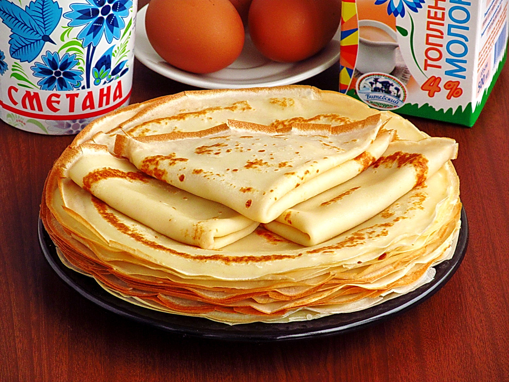
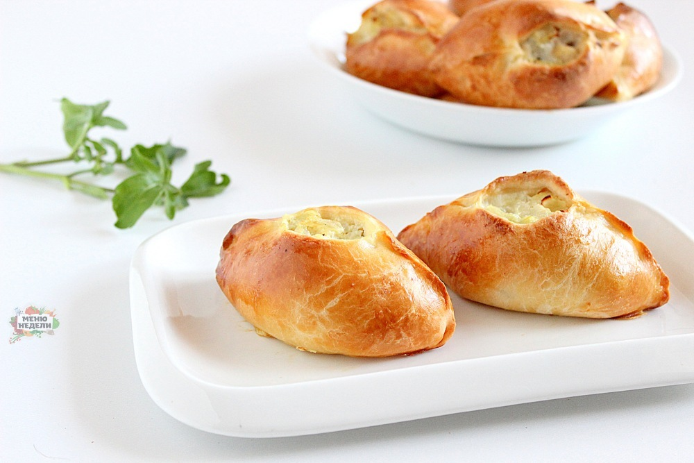
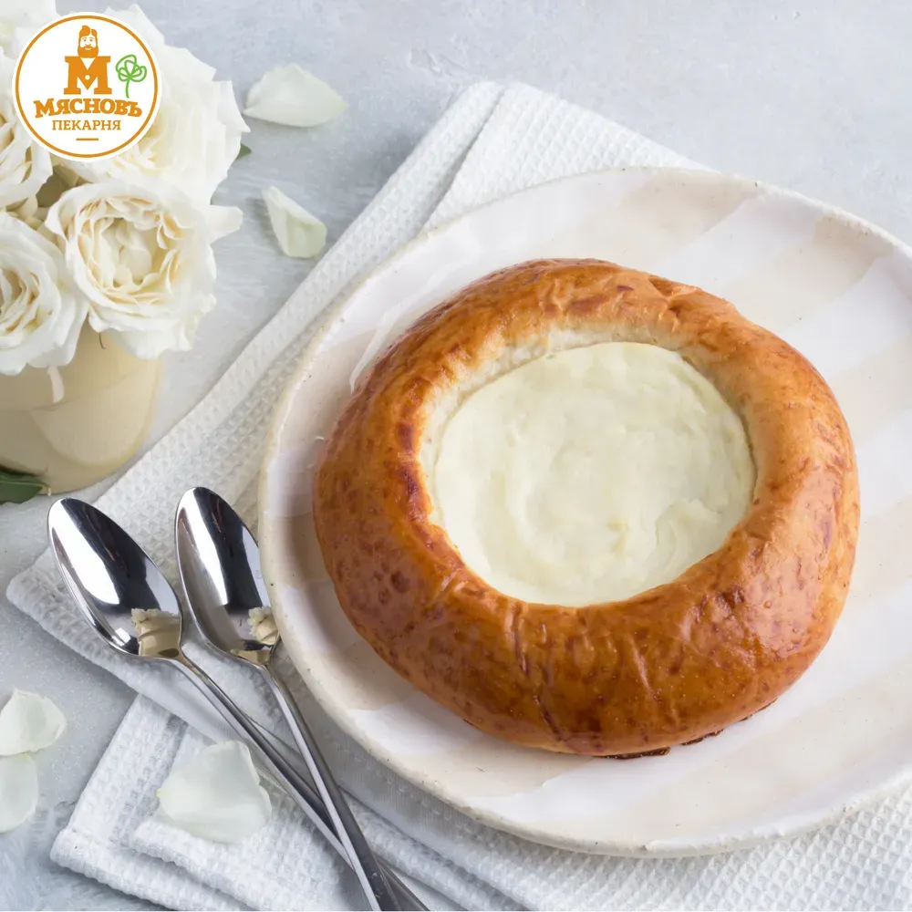

БЛИНЫ
Блины — блюдо русской кухни, выпекаемое из жидкого дрожжевого теста на сковороде. Подаются горячими с растопленным сливочным маслом. Могут также подаваться с икрой, солёной рыбой и любыми другими добавками или гарниром по желанию. Блины из пресного теста в кулинарии называются «блинцами».
В русской кухне блины появились не позднее IX века. Предшественниками блинов и оладий из дрожжевого теста (кислого, заквашенного) были блинчики, оладьи и лепёшки из пресного теста. Блины пекли из различных видов муки и их смесей: пшеничной, гречневой, ржаной, овсяной, пшённой, гороховой. Простонародье в основном использовало ржаную муку. «Красными» называли блины из гречневой муки, «белыми» — из пшеничной.
Несмотря на то, что блины фактически жарят, по отношению к ним может использоваться глагол «печь», так как раньше блины пекли в русской печи, где нижняя их сторона жарилась на сковороде, а верхняя запекалась жаром топочной камеры.
Рецепт
Для приготовления данного продукта понадобятся эти продукты:
- Молоко: 500 мл.
- Яйца: 2 штуки
- Сахар: 3 ст.ложки
- Соль: 1 щепотка
- Растительное масло: 2 ст.ложки
- Мука пшеничная: 120 грамм
- Шаг 1
- Подготовьте указанные продукты. Молоко можно использовать любой жирности. По желанию к списку ингредиентов допустимо добавить немного ванильного сахара или молотой корицы.
- Шаг 2
- Вбейте куриные яйца в глубокую емкость или салатник, всыпьте сахарный песок и соль. Взбейте венчиком примерно 1-2 минуты. В пышную пену массу взбивать не нужно, главное — тщательно перемешать желтки и белки.
- Шаг 3
- Влейте молоко и вмешайте его венчиком во взбитую яичную массу. Можно добавить различные сладкие приправы и специи.
- Шаг 4
- Аккуратно по частям всыпьте пшеничную муку и не взбивайте, а вмешайте ее в массу, чтобы не образовались комочки.
- Шаг 5
- Влейте растительное масло и перемешайте. В таком виде оставьте тесто при комнатной температуре на 15-20 минут ничем не накрывая. За это время в муке активируется клейковина, благодаря которой блины при жарке не будут рваться. Этот этап обязателен!
- Шаг 6
- Раскалите блинную сковороду и смажьте ее маслом в первый раз. Влейте половину половника теста и округлите. Испеките блин по 1-2 минуте с каждой стороны и выложите на тарелку. Таким образом испеките и остальные блины.
- Шаг 7
- Выложите их на тарелку и подайте к столу горячими с чаем, кофе, капучино, созывая свою семью на дегустацию.
——————

РАСТЕГАЙ
Расстегай — пирожок с открытой серединой, по выражению В. И. Даля, «пророшкой», через которую видна начинка, обычно из рыбы, но также из мяса, ливера, риса и грибов. Расстегаи составляют подаваемый на отдельной тарелке гарнир к жидким блюдам, преимущественно ухе и бульонам, или выступают горячей закуской.
Расстегаи пользовались большой популярностью, их подавали практически в любом московском трактире, между заведениями шла конкурентная борьба. Всех перещеголял владелец ресторана «Прага» Тарарыкин с расстегаями, начинёнными пополам стерлядью и осетриной. В книге В. А. Гиляровского «Москва и москвичи» описываются большие и круглые расстегаи, которые в московских трактирах было принято при подаче разрезать на тонкие кусочки «розанчиком». Петербургская знать специально приезжала в Москву, чтобы в тестовском трактире съесть ракового супа с расстегаями, их у Тестова подавали парой также к селянке с почками, а для особых гостей «закрашивали» налимьими печёнками. Трактир Щербакова на Кузнецком Мосту славился большими расстегаями с мясом, размером во всю тарелку и толщиной в три пальца. Трактир Егорова был знаменит круглыми рыбными расстегаями из рыбного фарша с визигой, к которым бесплатно подавали соусник ухи.
Рецепт
Для приготовления данного продукта понадобятся эти продукты:
- Молоко: 200 мл
- Филе рыбы: 400г.
- Сахар: 2 ст.ложки
- Соль: 1 ч.ложка
- Растительное масло: 2 ст.ложки
- Мука пшеничная: 320 грамм
- Дрожжи сухие: 1 ст.ложка
- Лук репчатый: 1шт.
- Рис отварной: 0,5 стакана
- Сливочное масло: 20г
- Шаг 1
-
Готовим тесто.
В миске смешиваем дрожжи, соль, сахар и муку (3 ст. ложки). Добавляем тёплое (не горячее!) молоко, перемешиваем.
Накрываем миску салфеткой и оставляем опару в тёплом
- Шаг 2
- Когда опара подойдёт (покроется пузырьками), добавляем растительное масло и оставшуюся муку. Перемешиваем.
- Шаг 3
- Замешиваем тесто (месить примерно 10 минут). Тесто будет мягким и послушным.
- Шаг 4
- Чашку смазываем растительным маслом. Формируем из теста шар, выкладываем в чашку, накрываем плёнкой или целлофановым пакетиком и ставим в тёплое место примерно на 1 час для
- Шаг 5
-
Готовим начинку.
Рис (обязательно берите круглозёрный непропаренный) заранее ставим вариться в подсоленной воде. Варим рис на небольшом огне 20 минут.
С филе рыбы удаляем все косточки. Нарезаем филе небольшими кусочками.
- Шаг 6
- Лук очищаем, нарезаем мелкими кубиками и обжариваем на смеси растительного и сливочного масла до прозрачности. Сильно зажаривать лук не нужно.
- Шаг 7
- Соединяем в чашке отварной рис и лук вместе с маслом, перемешиваем. Добавляем рыбу, соль и перец. По желанию в начинку можно добавить зелень петрушки или укропа. Перемешиваем. Рыбная начинка для расстегаев готова.
- Шаг 8
-
Тесто слегка обминаем, смазав руки растительным маслом, и выкладываем на присыпанный мукой стол. Делим тесто на 2 части. Каждую часть теста делим ещё на 5-6 кусочков.
Кусочки теста скатываем в шарики.
- Шаг 9
- Каждый шарик теста раскатываем скалкой, чтобы получилась лепёшка. На лепёшки кладём примерно по одной столовой ложке начинки.
- Шаг 10
-
Защипываем тесто сначала с одного бока, затем с другого, чтобы в центре осталось небольшое отверстие.
- Шаг 11
-
Включаем духовку, пусть разогревается до 180 градусов. Противень застилаем пергаментом или смазываем растительным маслом.
Выкладываем расстегаи на противень. Прикрываем полотенцем или салфеткой и оставляем на 5-10 минут, чтобы тесто подошло.
- Шаг 12
-
Выпекаем расстегаи с рыбой и рисом в заранее разогретой духовке при температуре 180 градусов 20-30 минут.
Румяные и очень аппетитные расстегаи с рыбой и рисом готовы!
——————

ВАТРУШКА
Ватрушка — выпечное изделие из сдобного дрожжевого теста в виде лепёшки, в середине которой находится начинка как правило из творога, реже из варенья или повидла.
Считается, что ватрушки появились на Руси еще в дохристианский период. Изначально они имели ритуальное значение и использовались в языческих обрядах. Круглая форма ватрушки символизировала солнце, а творожная начинка - плодородие земли.От древнерусского слова "ватра", означающего очаг или огонь. Это связано с тем, что ватрушки традиционно выпекались в печи.
Рецепт
Для приготовления данного продукта понадобятся эти продукты:
- Молоко: 140 мл
- Яйцо: 1 штуки
- Сахар: 2 ст.ложки
- Соль: 2-3 грамма
- Мука: 250 грамм
- Дрожжи сухие: 5 грамм
- Растительное масло: 40 мл.
- Творог: 200 грамм
- Ванильный сахар: грамм
- Шаг 1
-
Молоко подогреваем до 40 градусов и выливаем в миску. Всыпаем 2 ст. ложки сахара и дрожжи. Не перемешивая, оставляем на 15 минут.
- Шаг 2
-
На поверхности должна появиться пена. Всыпаем соль. Перемешиваем.
- Шаг 3
-
Добавляем муку. Начинаем замешивать тесто.
- Шаг 4
-
Вливаем масло.
- Шаг 5
-
Вымешиваем тесто, пока оно не начнет отлипать от стенок миски, и формируем гладкий шар.
Накрываем миску с тестом пищевой плёнкой и оставляем в тепле на 20-30 минут.
- Шаг 6
-
Подошедшее тесто обминаем, снова накрываем и оставляем в тепле ещё на 30 минут.
- Шаг 7
-
Противень застилаем пергаментом.
Тесто снова обминаем, делим на 6 шариков и выкладываем на противень.
Оставляем на полчаса под кухонным полотенцем.
В конце этого времени включаем духовку для разогрева до 220 градусов.
- Шаг 8
-
Яйцо взбалтываем в мисочке.
- Шаг 9
-
Творог соединяем с сахаром, половиной яйца и ванильным сахаром (оставшееся яйцо пока откладываем в сторонку).
- Шаг 10
-
Пробиваем блендером.
- Шаг 11
-
Шарики теста почти полностью продавливаем донышком стакана, делаем углубления.
- Шаг 12
-
Заполняем все ватрушки творожной массой. Поверхность разравниваем.
- Шаг 13
-
Оставшуюся половинку яйца соединяем с 1 ст. ложкой воды и перемешиваем.
Этой смесью смазываем бортики ватрушек.
- Шаг 14
-
Выпекаем ватрушки при 220 градусах 15 минут.
- Шаг 15
-
Классические ватрушки с творогом и ванилью готовы.